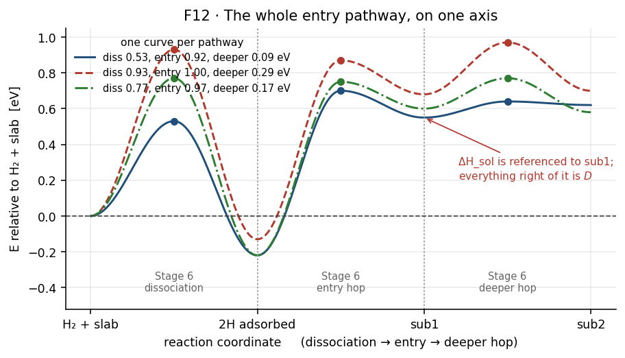

Part I — Overview¶
What the workflow computes, how its stages fit together, and what it assumes.
[!NOTE] Scope. Method only; no numbers from any real run. Equations are in Part II; the collapse from many quantities to few is in the aggregation ladder; each stage is in
03-stages/.
Contents¶
1.1 What the workflow answers¶
The question is: how fast does hydrogen pass through this metal, and why?
That decomposes into six questions the workflow answers in order.
Where can hydrogen sit on the surface and in the lattice, and how do those places differ from one another? — Stages 3 and 4
What does it cost to split a molecule on the surface and move an atom into the lattice? — Stages 5 and 6
How often does each of those steps happen at temperature? — Stages 7 and 8
How much hydrogen does the lattice hold at equilibrium? — Stage 9, giving \(S(T)\)
How fast does it move once dissolved? — Stage 10, giving \(D(T)\)
What permeability do those two imply? — Stage 11, giving \(\Phi = DS\)
Questions 1–4 form one chain and question 5 another. They are independent all the way down and meet only at question 6.
[!IMPORTANT] The workflow answers “why” as well as “how fast”. \(E_\Phi = E_D + \Delta H_{\mathrm{sol}}\) (T25) splits the permeation barrier into a transport part and a dissolution part, so a material can be slow for two quite different reasons. A measurement of \(\Phi\) alone cannot distinguish them.
1.2 Ways of running it¶
The pipeline is split into three Parts, which map onto the stages as:
Part |
stages |
produces |
depends on |
|---|---|---|---|
Part 1 — surface |
1–8, dissociation family |
\(\Delta H_{\mathrm{diss}}\) and surface rates |
— |
Part 3 — bulk diffusivity |
1, 10 |
\(D_0\), \(E_D\), and the lattice parameter against temperature |
— |
Part 2 — permeation |
1–9, 11, hop families |
\(S(T)\), \(\Phi\) |
Parts 1 and 3 |
Parts 1 and 3 are independent and can run at the same time. Part 2 needs both.
Four ways to drive them:
route |
runs |
use when |
|---|---|---|
the master notebook |
everything, in dependency order |
a new material, start to finish |
the surface notebook |
Part 1 alone |
iterating on surface chemistry |
the diffusivity notebook |
Part 3 alone |
iterating on the molecular dynamics |
the permeation notebook |
Part 2 alone |
Parts 1 and 3 are done and current |
[!IMPORTANT] The script regenerators are developer tools, not a way to run the workflow. They rewrite the generated per-material scripts in place, which is what you want after changing a template or patching a bug — not what you want as a first step on a new material.
Re-running and idempotency¶
Every expensive stage is gated by a marker file, so re-running is cheap and safe: completed work is skipped and named. Forcing a stage to repeat means deleting its marker.
[!IMPORTANT] Markers for the dynamics and for its post-processing are separate. A loading can hold complete trajectories and no fit, in which case re-deriving costs seconds while repeating the dynamics costs GPU-days. Check which is missing before deleting anything — see Stage 10.
1.3 The pipeline at a glance¶
Figure 1. Stage dependencies. Note the two independent descents — the surface chain through 2–9 and the bulk chain through 10 — meeting only at 11. A break anywhere in the left chain leaves diffusivity results intact, and the reverse.

Figure 2. What the surface half computes, on one axis. Follow any single
curve from left to right: the molecule dissociates, one atom enters the first
subsurface layer, then hops deeper. Look at where the curves separate — the
spread between pathways is what the averages in
the aggregation ladder collapse. Solubility is referenced
at sub1; everything to its right is carried by \(D\). Fictitious energies; the
production figure neb_mep_full_pathway.png uses this same layout.
# |
stage |
main inputs |
main outputs |
code |
|---|---|---|---|---|
1 |
materials and structures |
structure files |
classified materials, bulk cells with hydrogen |
|
2 |
slab and relaxation |
bulk cell |
relaxed slab, freeze cutoff |
|
3 |
surface sites |
relaxed slab |
surface sites with labels |
|
4 |
subsurface sites |
relaxed slab, surface sites |
interstitials, labels, layer connections |
|
5 |
enumeration |
sites |
filtered pathway list |
|
6 |
band |
pathways |
barriers, reaction energies, saddles |
|
7 |
vibrations |
state geometries |
frequency lists |
|
8 |
rate assembly |
barriers, frequencies |
rates, prefactors, quality census |
|
9 |
solubility |
reaction energies, lattice parameter |
\(\Delta H_{\mathrm{sol}}(e)\), \(S(T)\) |
|
10 |
bulk diffusivity |
bulk cell, loadings, temperatures |
\(D_0\), \(E_D\), \(a_0(T)\) |
|
11 |
permeability |
\(S(T)\), \(D_0\), \(E_D\) |
\(\Phi_0\), \(E_\Phi\), flux |
1.4 Assumptions and limits¶
Physical¶
assumption |
where it enters |
what breaks without it |
|---|---|---|
harmonic transition-state theory |
every rate |
rates at temperatures where anharmonicity matters |
dilute dissolved hydrogen |
Sieverts’ law, the permeability |
solubility and permeability above the dilute regime |
equilibrium between gas and lattice |
the whole solubility construction |
any kinetically limited situation |
diffusion is isotropic and three-dimensional |
the Einstein relation |
layered or strongly anisotropic transport |
one elementary step per pathway |
every barrier |
a path with several maxima |
the potential describes this chemistry |
everything |
silently, everywhere |
Methodological¶
limit |
consequence |
|---|---|
the partial Hessian freezes most of the lattice |
spurious low and imaginary modes are expected; thresholds exist to manage them |
the alloy slab has no short-range chemical order |
the distribution of environments reflects random mixing |
environment weights are pathway fractions |
sampling acts as an implicit weight on the solubility |
validated for close-packed faces of face-centred-cubic materials |
other faces and body-centred-cubic surfaces are untested |
three temperatures give a one-degree-of-freedom Arrhenius fit |
quoted parameter errors are formal and optimistic |
The one that cannot be designed away¶
[!IMPORTANT] No hydrogen loading is both dilute and well sampled. The dilute limit the permeability formulas assume is a single atom; a single atom is exactly the case whose mean-squared displacement has no ensemble average and so converges worst. Raising the loading buys statistics at the cost of the assumption, and lowering it does the reverse. There is no setting that resolves this — only a choice, which should be stated alongside any number it affects. See Part II §9.4.
1.5 Software and environment¶
component |
role |
|---|---|
a machine-learned interatomic potential |
every energy and force |
a molecular-dynamics engine |
minimisation, constant-pressure and constant-volume dynamics |
an atomistic simulation library |
band relaxation, vibrations, structure handling |
a surface-site enumeration library |
candidate adsorption sites |
a scheduler |
all expensive stages, as chained array jobs |
Versions this documentation was checked against are recorded in the scope note of Part II, together with the command that re-checks the equations.
Where the work runs¶
The expensive stages — relaxation, bands, vibrations, dynamics — are written as
standalone generated scripts, one per material, submitted to a scheduler.
The library in models/ writes those scripts; it does not run the physics
itself.
This matters for reading the code: a function named for a stage usually generates that stage rather than performing it, and the procedure to follow is in the generated script’s body.
[!IMPORTANT] Paths, partitions and module names in the configuration are specific to one cluster. Check them against your environment before running anything; nothing validates them, and a wrong path fails at submission rather than at configuration.